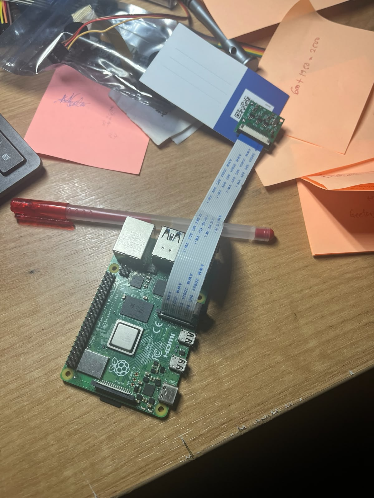
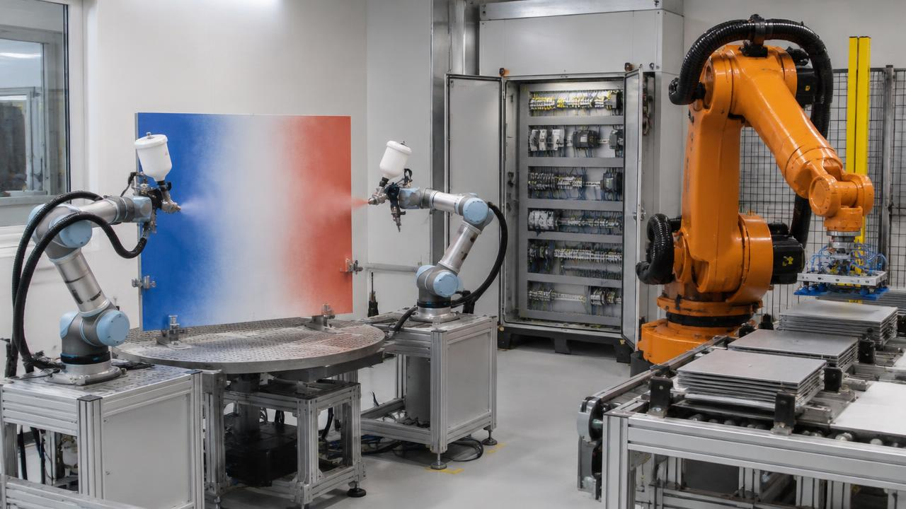
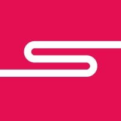
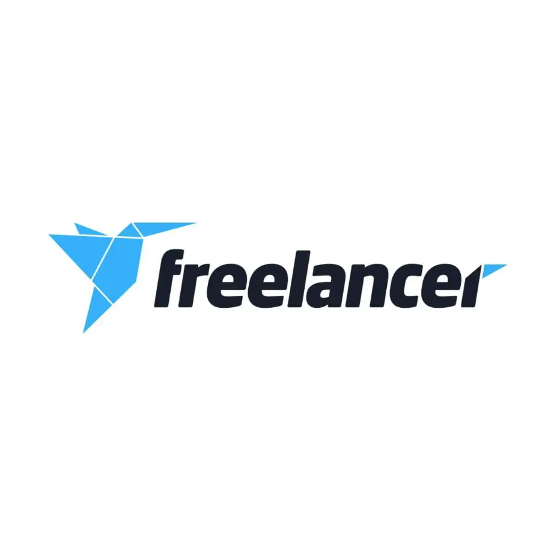
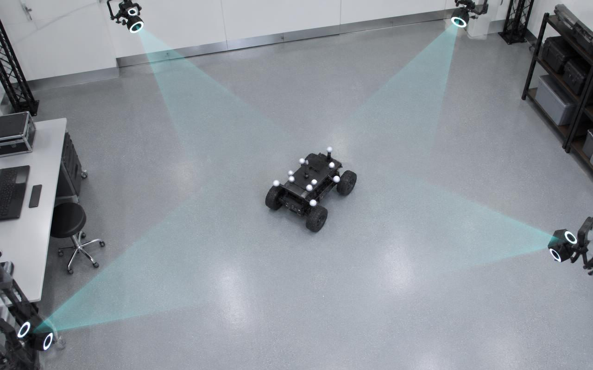
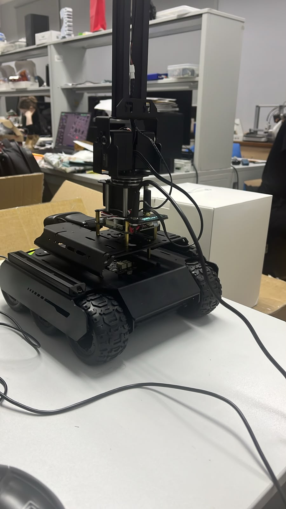
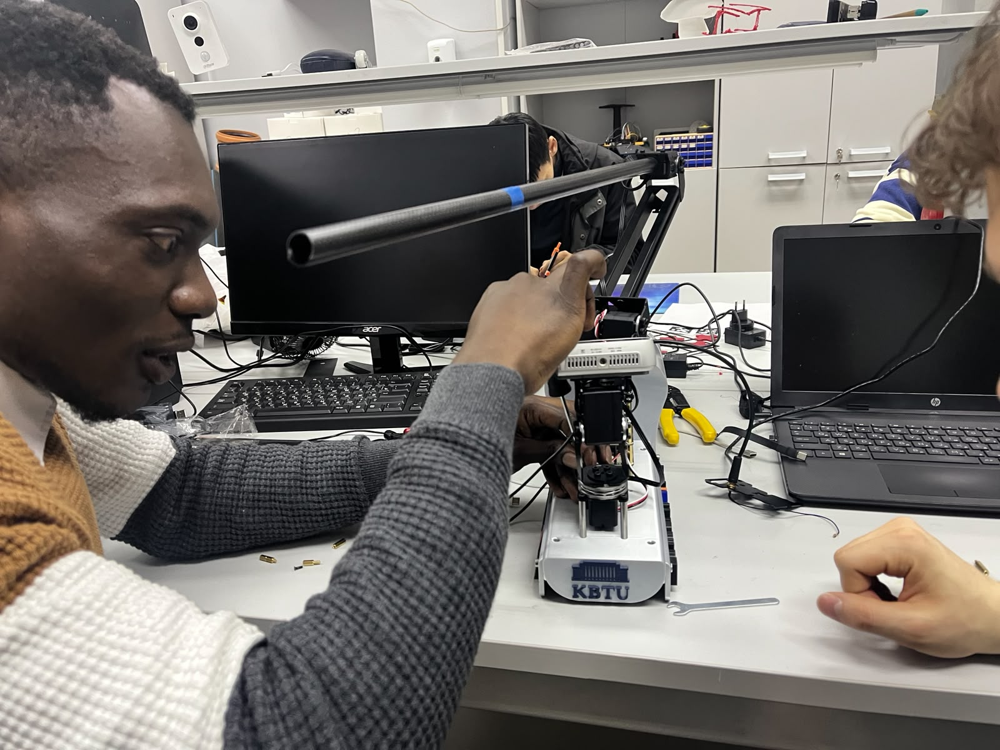
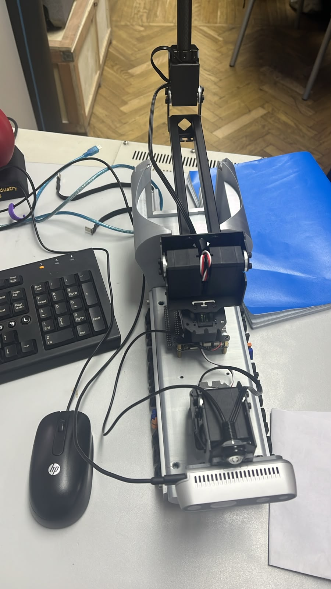

Prospective PhD candidate · Embedded Robotics
Collins
Masimba
I build the embedded firmware and real-time motion control that make robots move — from STM32 microcontrollers and servo drives to EtherCAT networks — and study how learned controllers can run safely on that hardware.
Currently
Synapticon GmbH
- <10 ms
- On-device inference on STM32
- 20%
- Shorter actuator integration via HIL
- 2
- IEEE conference papers
- 13+
- Years of engineering practice
- Embedded motion control
- Real-time firmware
- STM32 · FreeRTOS
- EtherCAT
- Servo drives
- Hardware-in-the-loop
- ROS2
- TinyML
- PROFINET
- Learned control on hardware
01About
Research profile
I am an embedded robotics engineer: I work where robot software meets the hardware that moves — microcontrollers, servo drives, motion-control firmware and real-time industrial fieldbuses. At Synapticon GmbH in Germany I test PID and field-oriented control firmware for servo drives and the Safe Motion Module drives of the Positron humanoid, using ROS2, hardware-in-the-loop benches, EtherCAT and JTAG debugging.
Before that, as a research assistant at Kazakh-British Technical University, I brought learning-based control onto real platforms — KUKA manipulators, quadcopter UAVs and PLC-coordinated multi-robot cells — work that led to two IEEE conference papers (IECON 2026, ICCA 2026). I am seeking a PhD position on embedded and real-time robot control: how learned controllers can run safely and deterministically on resource-constrained robotic hardware.
Education
B.Sc. Automation and Control Engineering
Kazakh-British Technical University (KBTU) · 2022 – 2026
Thesis: Multi-Robot Painting Control System — reinforcement-learning-based adaptive control coordinating multiple robot arms, trained in MATLAB and executed through PLC-based real-time coordination.
Modelling & Control of Robotic ManipulatorsControl Theory & ApplicationMobile RobotsNetwork Mobile Robot SystemsAutomated Driving3D Computer VisionStatistics for ResearchersAdvanced Engineering Mathematics

Latest news
-
Aug 2026
ICCA 2026 paper published on IEEE Xplore.
-
Jun 2026
Presented multirobot control framework at IEEE ICCA 2026.
-
2026
Paper on hybrid EKF-DQN UAV stabilization accepted at IEEE IECON 2026.
-
Jan 2026
Completed BSc in Automation and Control Engineering at KBTU.
-
Jun 2025
Joined Synapticon GmbH (Germany) as a Robotics Engineer intern.
Research interests
01
Embedded & real-time control
Deterministic motion control on microcontrollers and servo drives — PID and field-oriented control running under hard timing constraints.
02
Firmware & hardware-in-the-loop validation
Automated HIL testing, test oracles and statistical evidence for releasing motion-control firmware and safety functions on real actuators.
03
Learned control on embedded hardware
Bringing reinforcement learning, EKF estimation and TinyML onto resource-constrained robots — from STM32 nodes to UAVs and manipulators.
04
Industrial networks & multi-robot systems
EtherCAT, PROFINET and OPC UA as the real-time backbone for coordinating PLCs, drives and multiple robots.
02Publications
Peer-reviewed papers
-
IECON '26 RMSE 2.4 m → 1.2 m
Hybrid EKF-DQN Model for Real-time Stabilization and Drift Reduction of a Quadcopter UAV
K. Yessenzhanov, C. Masimba, I. Muhammad, M. H. Tanveer, R. C. Voicu
Annual Conference of the IEEE Industrial Electronics Society (IECON), 2026
Fuses EKF-filtered IMU/GPS state estimates with a Deep Q-Network controller and benchmarks it against PID under 0, 20 and 50 m/s wind. Position RMSE improves from 2.4 m to 1.2 m.
-

ICCA '26 3 robots · 190-waypoint trajectoryDistributed Control Framework of Multirobot System Using Automation and Control Applications
R. Zeinulla, A. Abdimalik, A. Rakhmetkali, C. Masimba, T. Samigulin
20th IEEE International Conference on Control and Automation (ICCA), 2026
Session WeAT4.7, 16–19 June 2026
A four-layer PLC–MATLAB architecture coordinating two RoArm-M2-S manipulators for synchronized painting and a KUKA KR10 for pick-and-place over OPC UA and PROFINET, supervised via WinCC HMI.
03Experience
Research & industry
-

Robotics Engineer (Intern)
Jun 2025 – PresentSynapticon GmbH · Schönaich, Germany
- Automated testing of PID and field-oriented motion control firmware for servo drives (Python, pytest, REST API).
- ROS2 packages (C++/Python) for testing Safe Motion Module drives of the Positron humanoid.
- Correlated MATLAB/Simulink HIL models with bench measurements to automate actuator acceptance criteria; cut integration cycle time by 20%.
- Debugged EtherCAT/PROFINET integration and motor-control firmware defects with JTAG.
-
Research Assistant, Robotics
Oct 2023 – Jun 2025Kazakh-British Technical University · Almaty, Kazakhstan
- Applied Deep Q-Learning to KUKA manipulators, improving end-effector precision by 20% (0.25 → 0.20 mm).
- Investigated DQN–EKF fusion for state estimation and decision-making under uncertainty (→ IECON 2026).
- Developed hierarchical diffusion-based trajectory planning with SLAM in ROS2; OpenCV motion planning raised efficiency from 0.90 to 0.95.
- Built PLC/SCADA automation for a water treatment plant (98% uptime) and conveyor line (+10% throughput).
-

Independent Engineer — MATLAB, ML & Robotics
2013 – PresentFreelancer.com · Remote
- 13+ years delivering MATLAB and machine-learning solutions: deep learning, reinforcement learning, signal processing, optimisation (GA, PSO) and control (PID, fuzzy).
- Perception (YOLOv8) and PLC control systems for autonomous and industrial robots.
04Projects
Independent research

OngoingR-01
Camera-based ground truth as a test oracle for motion control
Verifying robot motion without trusting on-board sensors, and determining how many runs are needed to accept or reject a release.
Motion controlVerificationComputer vision
OngoingR-02
Rare-event safety validation with a learned digital twin
Estimating, with statistical confidence, the failure probability of a safety function when failures are too rare to observe by direct testing.
Safety functionsDigital twinRare-event estimation
RecentR-03
Multi-agent RL for drone swarms in Isaac Sim
Graph convolutional policy trained with multi-agent PPO for swarm path planning under wind, deployed as a ROS2 controller over PX4 SITL.
MARLGNNPX4ROS2
OngoingR-04
Human-aware, uncertainty-robust MAPF for UGV fleets
Extending classical multi-agent path finding (CBS) to robots with real dynamics, timing uncertainty and human interference.
Multi-agentPlanningUncertainty
Selected past projects
Predictive sensor node with TinyML
On-device anomaly detection on STM32 with FreeRTOS and MQTT; inference under 10 ms.
Embedded AISTM32FreeRTOSMQTT

Multi-robot adaptive control with RL
Reinforcement learning for coordinated task execution across multiple industrial arms.
PLCMulti-robotRL

Hybrid EKF-DQN quadcopter stabilization
Learned control with filtered state estimates for UAV stabilization under strong wind.
RLEKFSimulink

SLAM navigation in ROS2
Autonomous mobile robot with SLAM Toolbox, Nav2 MPPI controller and Gazebo simulation.
ROS2SLAMNav2
Demo videos
Recorded runs on real hardware and in simulation, pulled automatically from each repository's README.
05Skills
Methods & tools
Embedded systems
STM32ESP32FreeRTOSTinyMLJTAG debuggingMQTTAltium DesignerVerilog
Motion control & fieldbuses
PIDField-oriented controlEtherCATPROFINETCANopenOPC UATwinCATSiemens TIA PortalHIL testing
Programming & tooling
C/C++PythonMATLAB/SimulinkStructured TextBashGitDockerJenkins CI/CDLinux
Robotics software
ROS2Nav2SLAM ToolboxGazeboIsaac SimMuJoCoPX4KUKA
Learning & estimation
Reinforcement learning (DQN / PPO)EKFPyTorchTensorFlowOpenCVYOLOv8
Languages
-
EnglishC2 (proficient)
-
GermanB2 (upper-intermediate)
Activities
- IEEE student member
- KBTU Engineering Club — Eco-Shell 2024 energy-efficient vehicle competition
- Open-source: 30+ public repositories in robotics and embedded AI